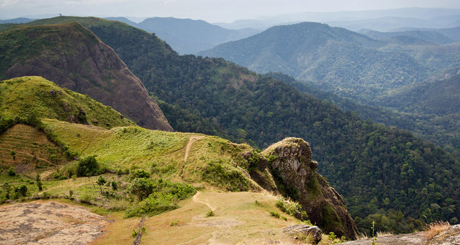

Idukki, is a district in the Indian state of Kerala. It was constituted on 26 January 1972, by taking Peerumade, Udumbanchola, Devikulam taluks from Kottayam district and Thodupuzha taluk of Ernakulam district. Its division was previously headquartered at Kottayam city, but moved to Kuyilimala near Painavu and Cheruthoni in June 1976. Idukki district lies amid the Cardamom Hills of Western Ghats in Kerala.
Tourist attraction in Idukki!
Chinnar Wildlife Sanctuary
Chinnar Wildlife Sanctuary is located 18 km north of Marayoor on State Highway 17 in the Marayoor and Kanthalloor panchayats of Devikulam taluk in the Idukki district of Kerala state in South India. It is one of 18 wildlife sanctuaries among the protected areas of Kerala.
Idukki Dam
The Idukki Dam is a double curvature Arch dam constructed across the Periyar River in a narrow gorge between two granite hills locally known as Kuravan and Kurathi in Mariyapuram village in Idukki District in Kerala, India. At 168.91 metres (554.2 ft),[1] it is one of the highest arch dams in Asia. It is constructed and owned by the Kerala State Electricity Board. It supports a 780 MW hydroelectric power station in Moolamattom, which started generating power on 4 October 1975.[2] The dam type is a concrete, double curvature parabolic, thin arc dam.[3] The Indo-Canadian project was inaugurated by the Prime Minister Indira Gandhi on February 17, 1976
Munnar
Munnar, is a town and hill station on Western Ghats mountain ranges located in the Idukki district of the southwestern Indian state of Kerala. Munnar is situated at around 1,600 metres above mean sea level, in the Western Ghats mountain range. Munnar is also called the "Kashmir of South India" and is a popular honeymoon destination
Peerumedu

Experience peace and quiet in Peermedu – a hill station of outstanding natural beauty. Decades ago, Peer Mohammed, a Sufi saint lived in Peermedu, and it was after him the place earned the name Peermedu or the Peer’s valley. Once you are in Peermedu, you would find that there would not be a better place for a saint to reside than the wild and beautiful hills and valleys embodied in an all pervading tranquility.
Apart from the wild, Peermedu is a plantation town, where you can find vast stretches of coffee, tea, cardamom, rubber and eucalyptus.
Thekkady Tourism
Home to the country's largest Tiger Reserve- Periyar, Thekkady is an important tourist destination in Kerala.
There are many resorts near the national park and an early boat safari within the sanctuary is amust to be able to spot wild elephants, bisons, wild boars, various kinds of birds, etc.
Periyar National Park, being a major attraction, is one place where you can enjoy bamboo rafting in the catchment area of Mullaiperiyar Dam. Travellers can also experience night trek in the wilderness of Periyar.
Anakarra is also located nearby which is a great place to enjoy nature. Murikaddy is located around 5 km from the city and is famous for coffee and spices plantations.